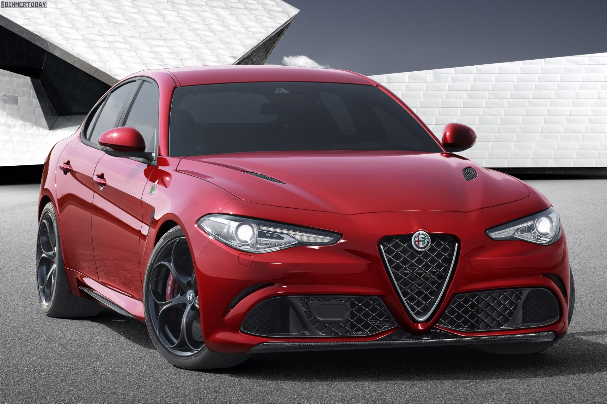

Alfa je napokon predstavila dugo i željno očekivanog naslednika modela 159. Reč je o modelu koji će nositi naziv Giulia, odnosno o prvoj alfinoj istinski sportski nastrojenoj limuzini s pogonom na zadnje tockove još od prestanka proizvodnje modela 75. Naime, ovaj model pokreće 3,0-litreni V6 turbobenzinski motor "tjuniran od strane stručnjaka s iskustvom iz Ferrarija", a koji razvija snagu od 510 KS. Drugim riječima, Giulia QV će biti ravnopravni takmičar, kada je u pitanju snaga, s glavnom konkurencijom poput Mercedesa C63 AMG S, BMW M3 i Audija RS4.
FOTOGRAFIJE :
